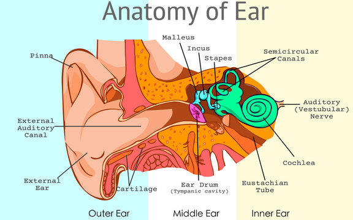

Sound
Sound is a wave or vibration that travels through a medium. When this wave reaches a receptor such as a humans or animals ear, these waves can be heard as sound.The Ear
The ear is composed of three sections: the inner ear, the middle ear and the outer ear.
The Outer Ear
The auricle (pinna) collects sound waves, before channeling and amplifying them into the ear canal (external auditory meatus).The sound waves then travel through to the eardrum (tympanic membrane) which vibrates based on the sound waves.
The Middle Ear
The vibrations on the eardrum set the ossicles in motion: the malleus (hammer), incus (anvil) and stapes (stirrup). The vibrations travel through the ossicles which are attached to the oval window, vibrating the oval window. Additionally, the Eustachian tube equalizes the air pressure between the air outside and the air in the middle ear.
The Inner Ear
From there, the vibration shakes the cochlea. Fluid within the cochlea moves in response to the vibrations, causing 25,000 hair cells at nerve endings (vestubular nerves) to move, which then cause the nerves to send electrical impulses to the brain. Finally, the brain interprets these electrical signals and thus, we hear sounds.